LAB_07 welcome screens (200x150, 1-bit)
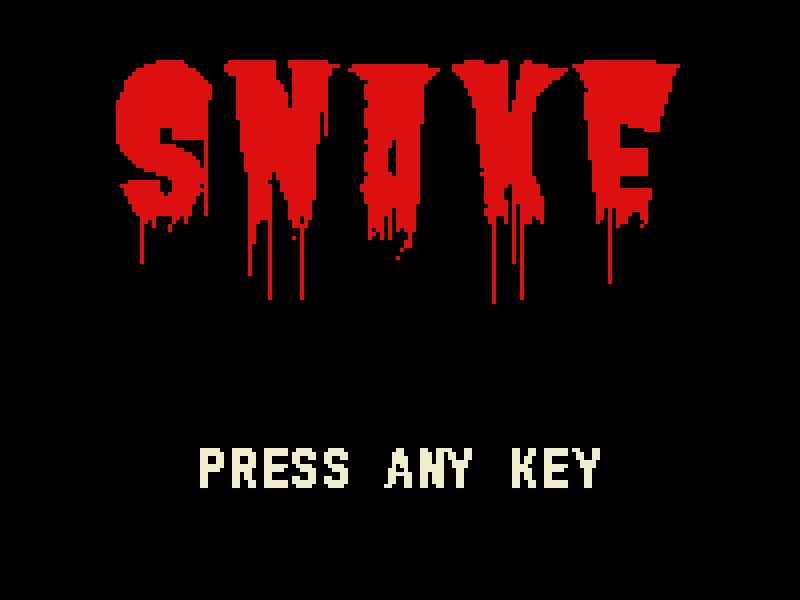
wc_horror_butcher
Butcherman dripping SNAKE (blood) + PRESS ANY KEY (bone) - matches game-over
FG=12'hD11 BG=12'h000 FG2=12'hEEC split sy=96
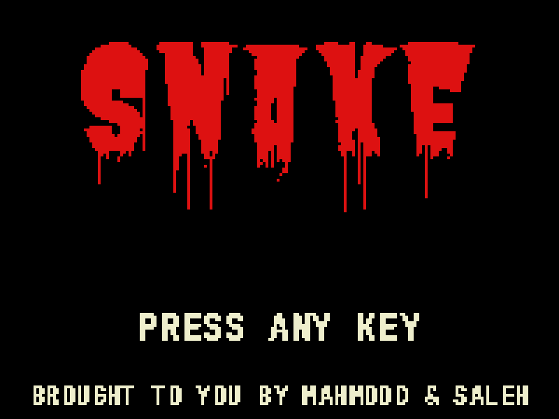
wc_horror_butcher_credits
same + 'brought to you by' credits (bone, small)
FG=12'hD11 BG=12'h000 FG2=12'hEEC split sy=96
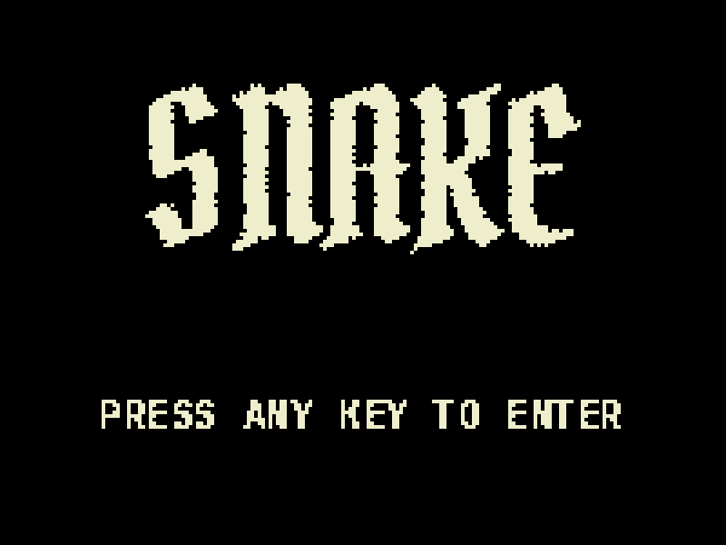
wc_gothic_pirata
blackletter SNAKE, distressed, bone on black
FG=12'hEEC BG=12'h000
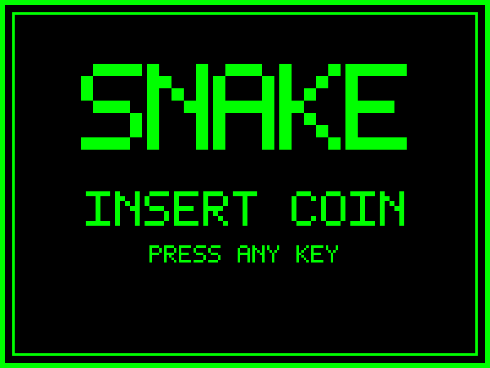
wc_retro_arcade
arcade cabinet: frame, blocky SNAKE, INSERT COIN - phosphor green
FG=12'h0F0 BG=12'h000
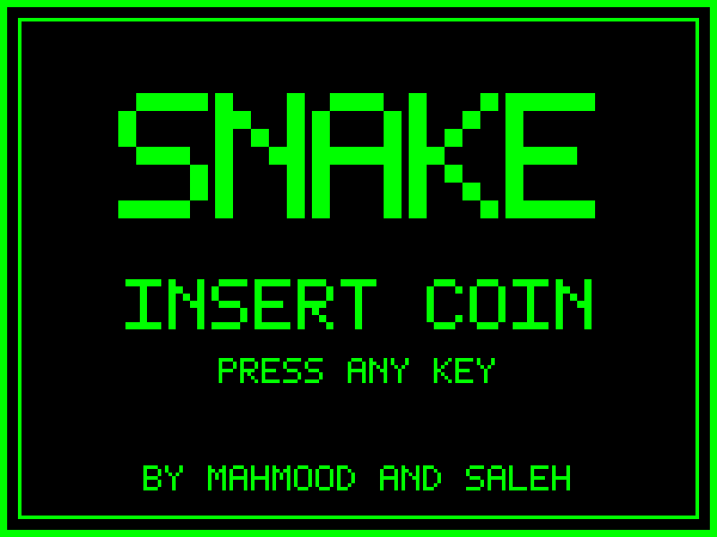
wc_retro_arcade_credits
same + BY MAHMOOD AND SALEH (5x7 blocky) at the bottom
FG=12'h0F0 BG=12'h000
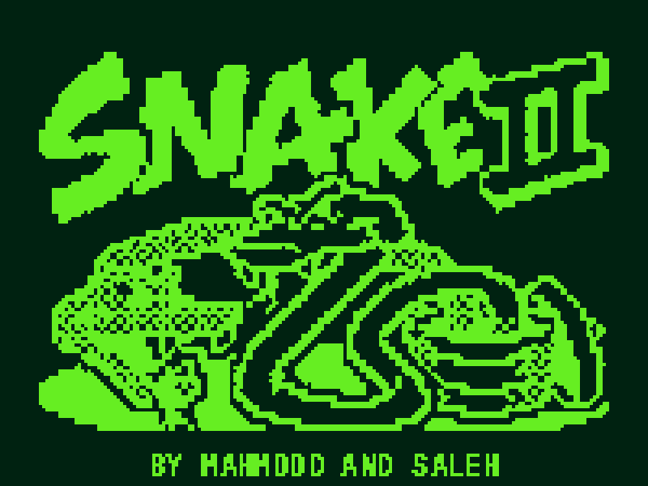
wc_retro_coil_credits
Nokia Snake II art + small credits strip (gameboy green)
FG=12'h6E2 BG=12'h021
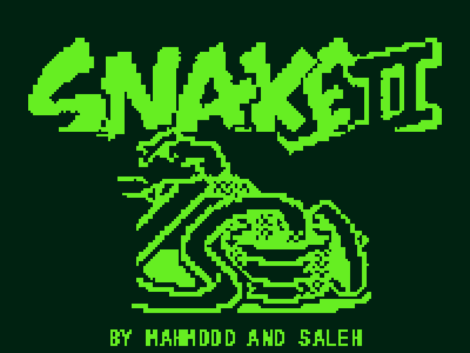
wc_retro_coil_solo_credits
Snake II art, second snake removed + coil recentered, credits strip
FG=12'h6E2 BG=12'h021
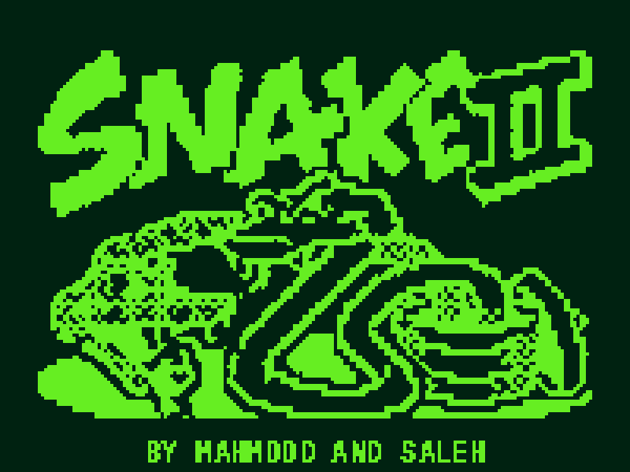
wc_retro_coil_duo_credits
both snakes, second snake de-noised (sparse scales), credits strip
FG=12'h6E2 BG=12'h021
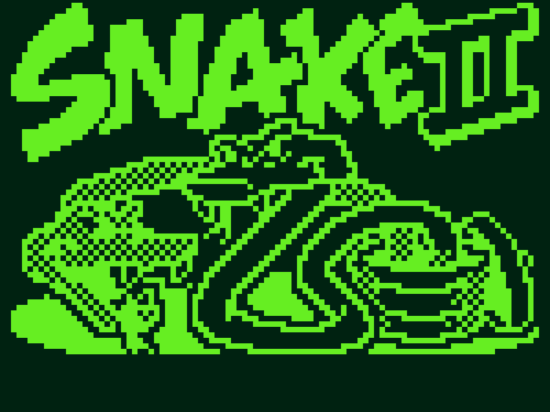
wc_retro_coil_v2
RE-TRACE from full-res wallpaper, tile-perfect 2x sampling, no credits
FG=12'h6E2 BG=12'h021
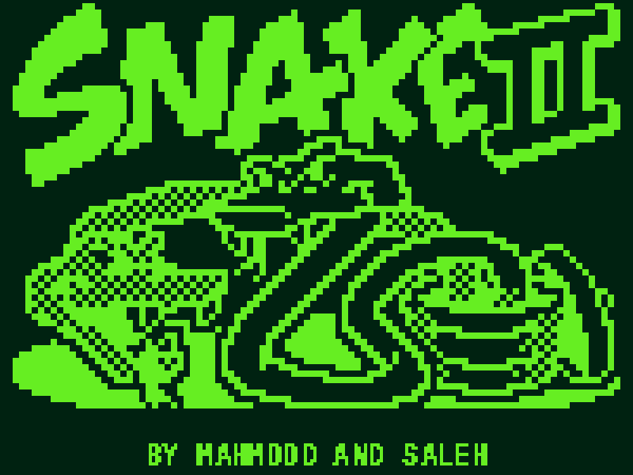
wc_retro_coil_v2_credits
same tile-perfect re-trace + credits strip
FG=12'h6E2 BG=12'h021
wc_modern_minimal
letterspaced wordmark + hairline, mint on navy (current FPGA colors)
FG=12'h3D9 BG=12'h012
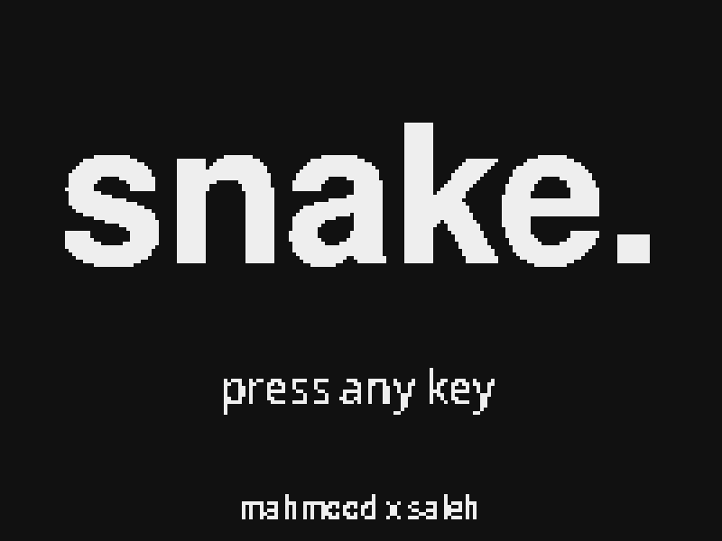
wc_modern_type
bold lowercase 'snake.' + tiny credits, soft white on near-black
FG=12'hEEE BG=12'h111